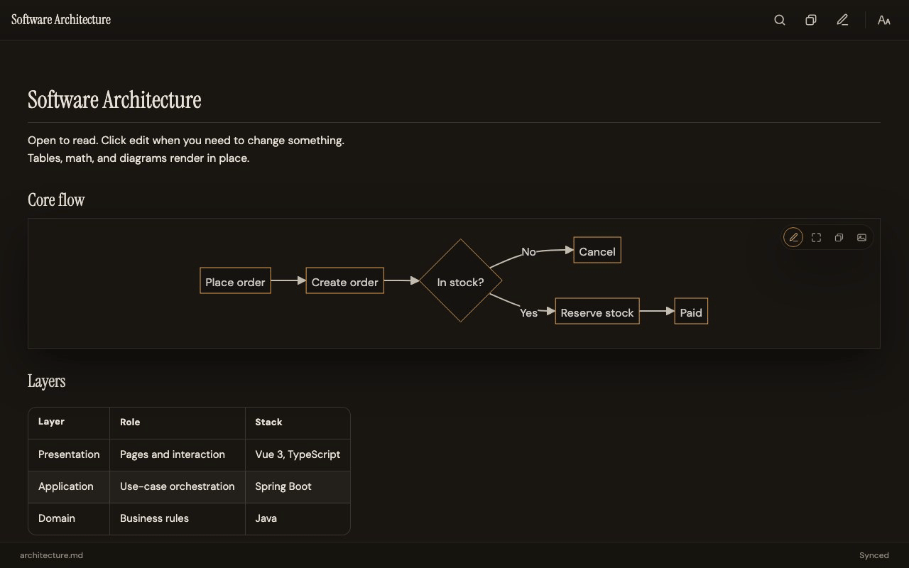

墨览 molan extension
在 Cursor / VS Code 里打开 Markdown：先阅读，要点再编辑，保存写回原文件。

安装
Cursor · Open VSX
open-vsx.org/extension/fengshihao/molan-markdown
Visual Studio Code
marketplace.visualstudio.com · fengshihao.molan-markdown
← 打开浏览器工作室